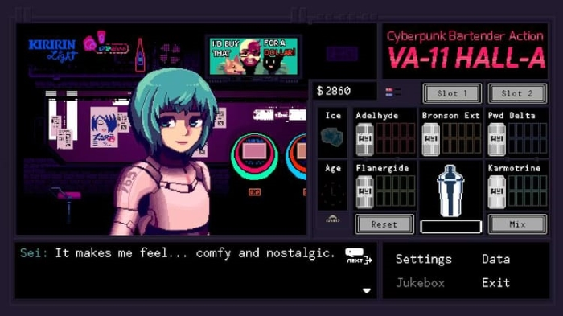

Visual novels
Dit genre kan echt heel leuk zijn. In het kort samengevat is een Visual novel een spel wat vooral op tekst focused. Stel je voor dat je een boek visueel moet maken. de Tekst blokken staan dan onderaan, waar dan vaak een character in het midden van het scherm staat. Dat character zegt meestal de tekst in de tekst blok. De visual novels die ik heb gespeeld hebben vaak nog wat gameplay erbij. Ik heb er niet heel veel gespeeld, maar er zijn er nog veel die op mijn lijst staan om te spelen. Zoals Coffee talk en Steins Gate.
Persona
Dit is een speciale. Ik wil het hier eigenlijk meer over de franchise hebben, omdat de meeste games dezelfde formule hanteren. ook wil ik erbij zeggen dat persona geen visual novel is. Ik heb het erbij gezet omdat deze game enorm veel dialoog heeft. meestal in de vorm van tekst bubbels onderaan je scherm. Persona als serie is eigenlijk een spinoff van een nog oudere serie. de eerste game van Shin megami tensei kwam uit in 1987, en sinds dien is de franchise geevolueerd en focused nu op persona.Persona is denk ik mijn favoriete franchise. Persona 5 is een game die qua stijl ontzettend uniek is. Het heeft een soort van punk stijl met wilde letters en dingen die je normaal niet in designs ziet. Ik heb een video hieronder gelinked die de menu's en alles laat zien.
De muziek is echt heel goed in dit spel. het genre wat vooral afspeelt is acid jazz. de vocals vind ik ook knap. de zangeres kan geen engels, maar heeft toch in elk lied de meeste engelse woorden goed uitgesproken. persona games zijn eigenlijk vanaf 3 altijd hetzelfde. de game is verdeeld in twee delen, klassieke dungeon crawling en een social sim. de main character zit in high school, en je gaat eigenlijk met zn leven mee door school maar dus ook tijdens de dungeon momenten. de dungeons zitten meestal in een soort van speciale wereld.
persona games hebben altijd in gemeen dat de characters extreem goed zijn gemaakt. ja, er zijn in elke game wel cliche characters die van mij echt wel verwijderd mochten worden. Maar deze characters compeseren met sommige characters die echt extreem echt zijn geschreven. Ik kan hier voor uren over doorpraten, maar ik ben gewoon echt een fan van dit spel, ondanks dat er zeker wel wat flaws in zitten.
VA-11 Hall-A
VA-11 Hall-A oftewel, Valhalla is een perfecte game als je moe bent en gewoon iets rustigs wilt spelen. het concept is simpel. Jij speelt als bartender in een rustige bar in een cyberpunk stijl stad. je ontmoet allemaal klanten waarvan je door de game heen steeds meer story van hun hoort. terwijl je met de klanten praat moet je drankjes aan ze geven. Sommige drankjes kunnen geheim dialoog, tot geheime klanten geven. Er is dus ook genoeg reden het spel opnieuw te spelen als je het 1 keer hebt uitgespeeld. Over het algemeen is dit gewoon echte een comfort spel. pak wat te eten en speel dit op een avond en je hebt de volle experience!
Danganronpa
Danganronpa is een trilogy van 3 games. het is een soort van murder mystery. een klas van 16 mensen word opgesloten, en ze komen in een soort van murder game. elk hoofdstuk heeft dezelfde formule. daily life > investigation > class trial.
het laatste vind ik het best van het spel. class trials zijn een soort van rechtzaken waar de levende klasgenoten proberen te onderzoeken wie de killer is. dit doe je als speler door dehele tijd contradictions te corrigeren, kleine minigames op te lossen enzo voort. Met echt heel goede voice acting op sommige momenten, en kleurige character designs en een echt extreem goede soundtrack blijft dit een van mn favoriete visual novel franchises, ondanks de soms rare scenes. ik heb hieronder de intro van het derde deel gezet